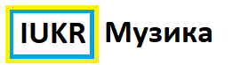

Назад<<<
Українська музика
Російська музика
------------------------------------------------
Ой у лузі червона калина (Бумбокс)
Не має звуку?
Зачинити
Зверніться за формою та опишіть проблему
Відкрити посилання
Не має відтворення звуку?
Завантажити
------------------------------------------------
Марічка (PATSYKI Z FRENEKA)
Ця пісня потрапила під "Обмеження"
Закрити
Пісня потрапила під обмеження прослуховування :(
Відкрити пояснення
Не має відтворення звуку?
Завантажити
------------------------------------------------
Ластівки
Не має звуку?
Зачинити
Зверніться за формою та опишіть проблему
Відкрити посилання
Не має відтворення звуку?
Завантажити